Practice-based Education Data Science: A Proposal for Our Emerging Field
A keynote presentation at the Stanford Education Data Science conference
What is Education Data Science, Really?
What do you mean by …
My goal is to improve educational outcomes.
My goal is to improve educational outcomes.
My goal is to improve educational outcomes.
The question motivating this talk
Is Education Data Science a methodological program that takes education as a use case — or is educational practice a source of problems, standards, and accountability?
My pathway to the question
My background — science teaching!
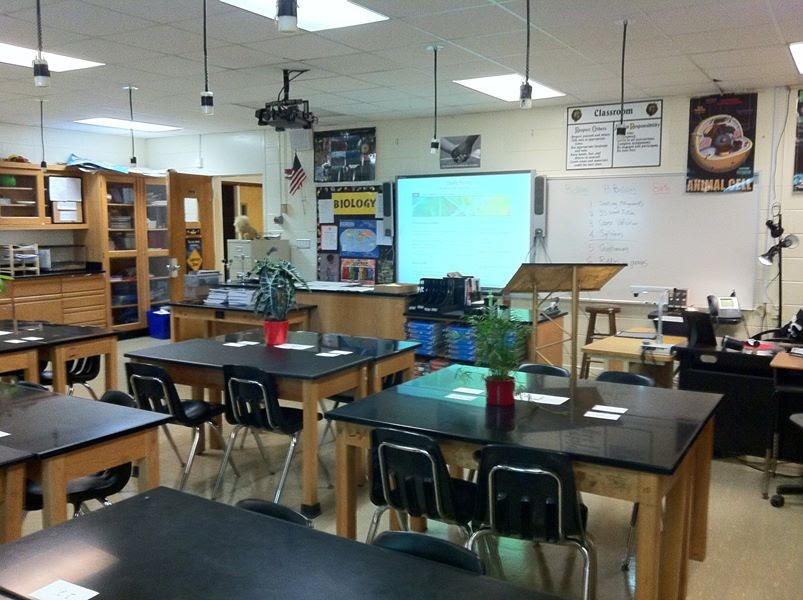
Seeing my students use Excel
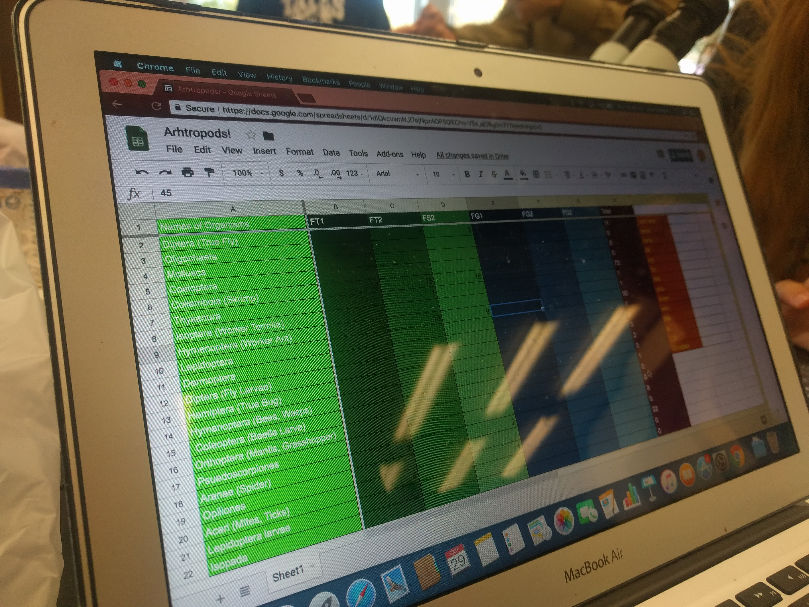
Seeing peers create a simple visualization through code

Teacher education
Software
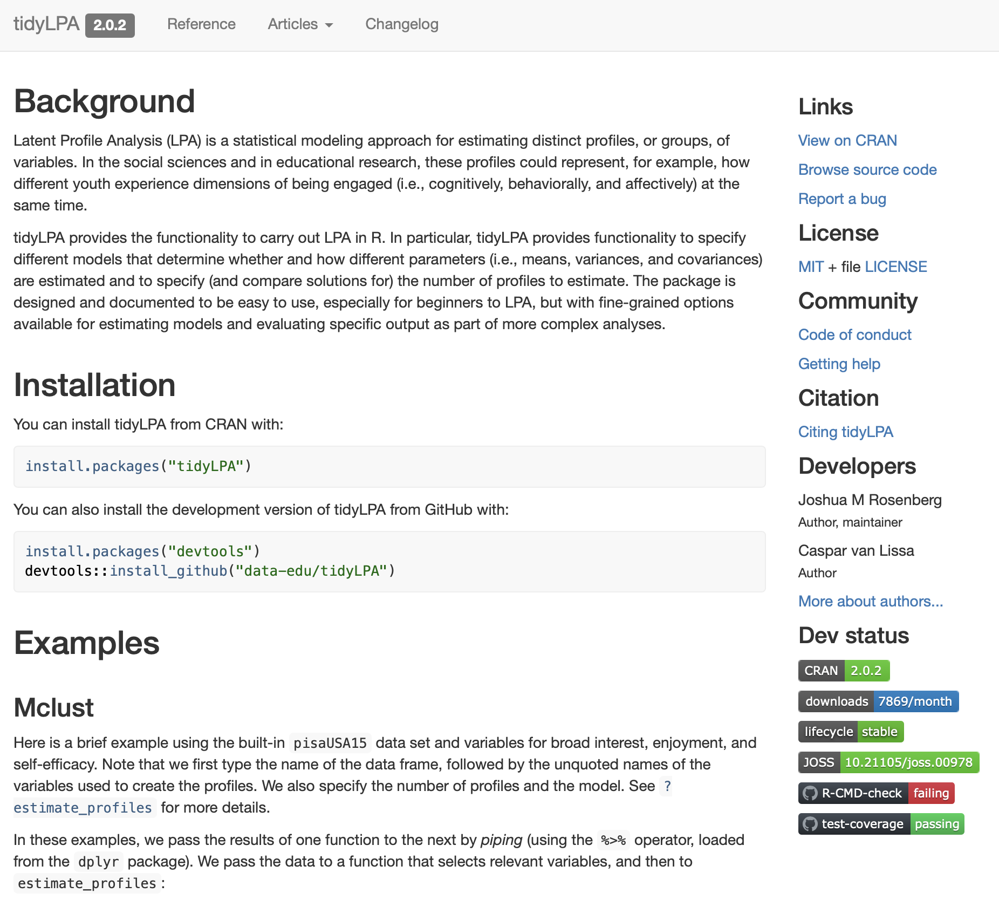
DSIEUR
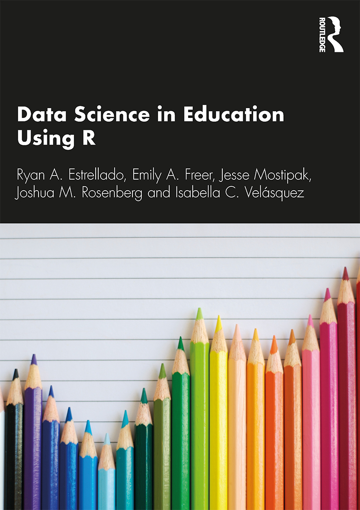
CREDIBLE
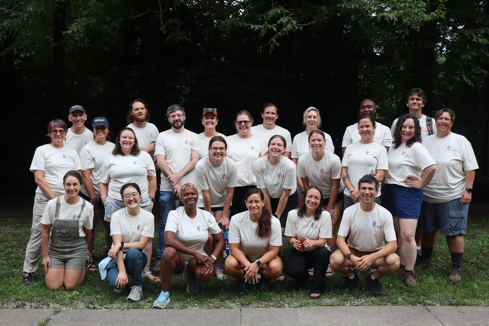
Turn and talk
What was your path to education data science?
Three pressures make this choice urgent
Funding cuts and the need to show impact

From Grant Witness
Educator and student data needs unmet
“I really do not understand the statistical stuff. I might as well be reading Russian.”
“It really freaks me out. I am not strong at math or with numbers.”
“Some of the programs, such as R, are a little intimidating.”
Technical factors were the most common source of intimidation:
37 of 44 participants (84%)
Educator and student data needs unmet

Educator and student data needs unmet
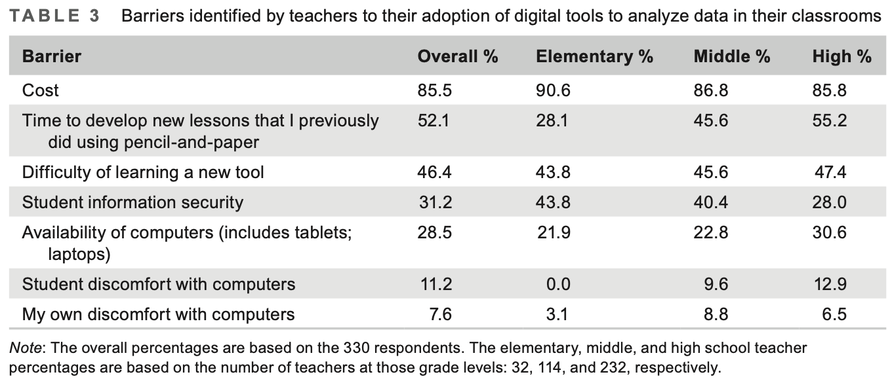
Allied fields are growing
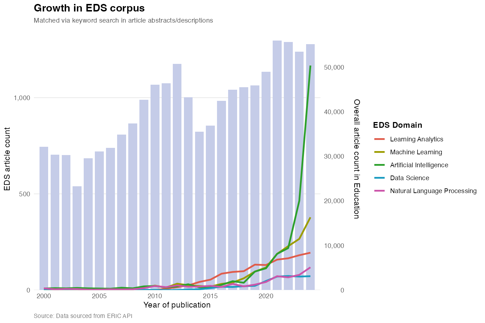
Drawing on McFarland et al. (2021)
Through 2025
Cleveland’s Challenge to Statisticians (and Us)
What impacts the work of the data analyst?
“An action plan to enlarge the technical areas of statistics focuses on the data analyst.”
“The basic premise is that technical areas of data science should be judged by the extent to which they enable the analyst to learn from data.”
“The benefit of an area can be direct or indirect.”
“Tools that are used by the data analyst are of direct benefit. Theories that serve as a basis for developing tools are of indirect benefit.”
How much time and how many resources should be dedicated to different areas of data science?
| Area | Share |
|---|---|
| Multidisciplinary Investigations | 25% |
| Models and Methods for Data | 20% |
| Theory | 20% |
| Computing with Data | 15% |
| Pedagogy | 15% |
| Tool Evaluation | 5% |
If education is the domain
What if we judged our field by how much teachers, learners, and leaders in educational systems can learn from data?
I argue that this is practice-based Education Data Science
What would the areas for an Education Data Science discipline (or program or department) be?
Five kinds of work this orientation makes visible
These are just examples — it’s up to us to flesh out
- Right-sized data problems
- Data science education infrastructure
- Research-practice partnerships around data education
- Thinking about impact beyond journals articles
- Teaching practitioners and researchers
Right-sized data problems
Blair (Higher Education; Administrator): A lot of my job is taking data that the school generates and helping the students to better understand their progress and also helping the faculty to better understand how to assess students’ progress and better support them… It’s not even a very sophisticated analysis, but it’s aggregating it together and presenting it to them in a way that they can take action on it.
Staudt Willet and Rosenberg, in preparation
Right-sized data problems
The work of an educational data scientist is “extremely delicate because it simultaneously necessitates the technical capacity for sophisticated data analysis and the sensibility for the specificities of the educational field” (p. 198).
Data science education infrastructure
A data science department in a university must, of course, concern itself with teaching in its own setting. But it is vital that resources be spent to study pedagogy and to teach pedagogy.
It makes sense that such study encompass more than the university setting; curricula in elementary and secondary schools, company training programs, and continuing education programs are important as well.
Education in data science does many things. It trains statisticians. But just as important it trains non-statisticians, conveying how valuable data science is for learning about the world.
Data science education infrastructure

Data science education infrastructure

Research-practice partnerships

Thinking about impact beyond journal articles
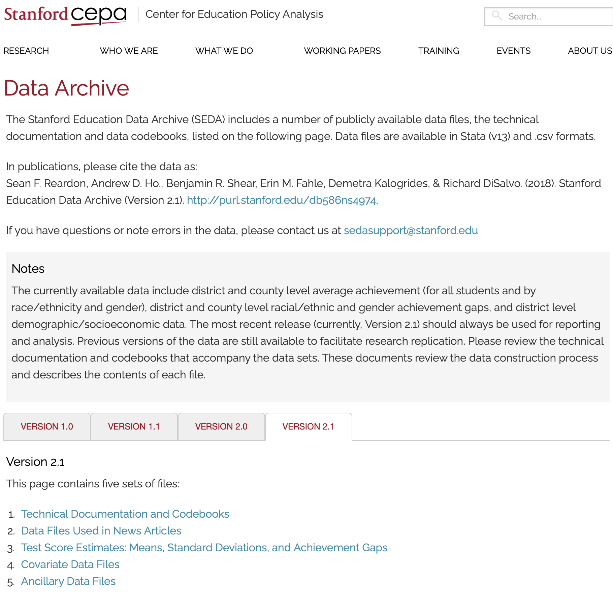

Teaching practitioners and researchers
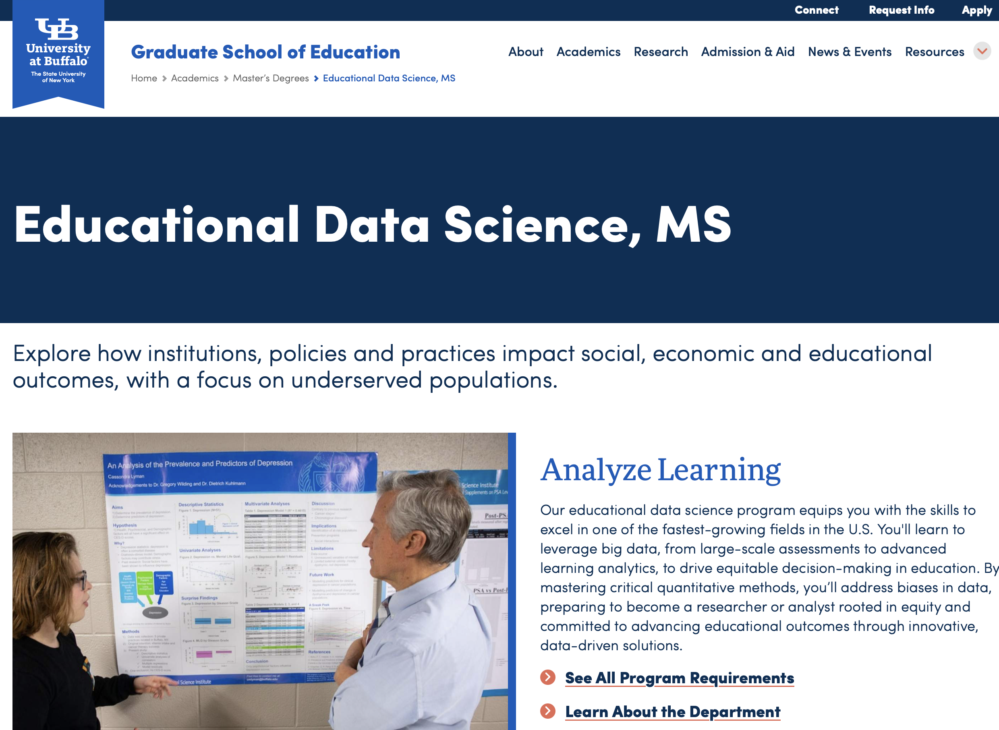
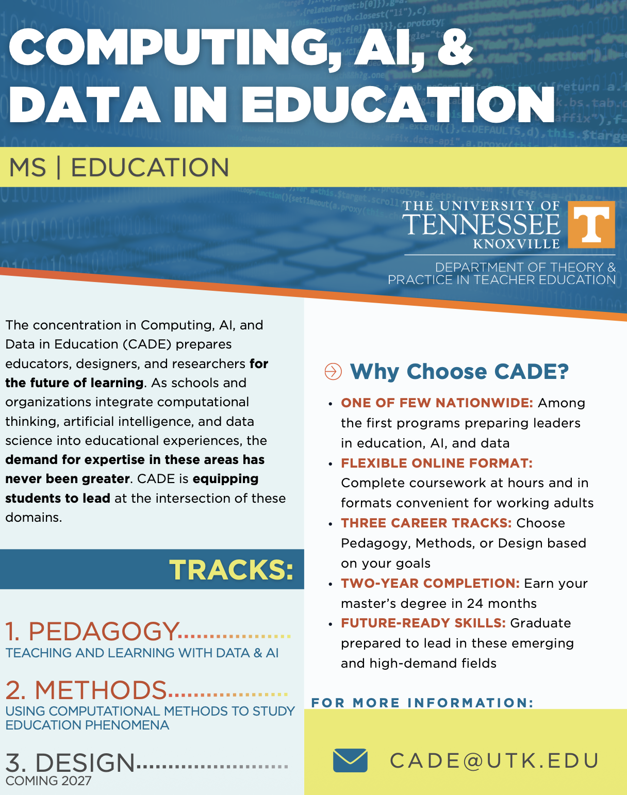
A few words on AI (that haven’t been said already)
AI can bring us closer to practice —
or it can make it easier to never engage with it at all.
Back to the core question
Is Education Data Science a methodological program that takes education as a use case — or is educational practice a source of problems, standards, and accountability?
Turn and talk
If we are to judge our field by how much teachers, learners, and leaders in educational systems can learn from data, what are the areas of work that we should be doing?
One worked example
Starting with practitioner needs for water quality data
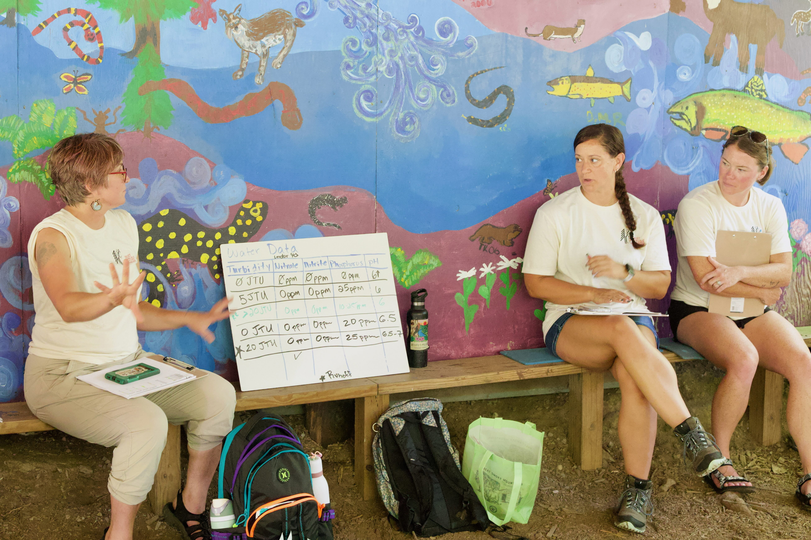
Shiny + CODAP
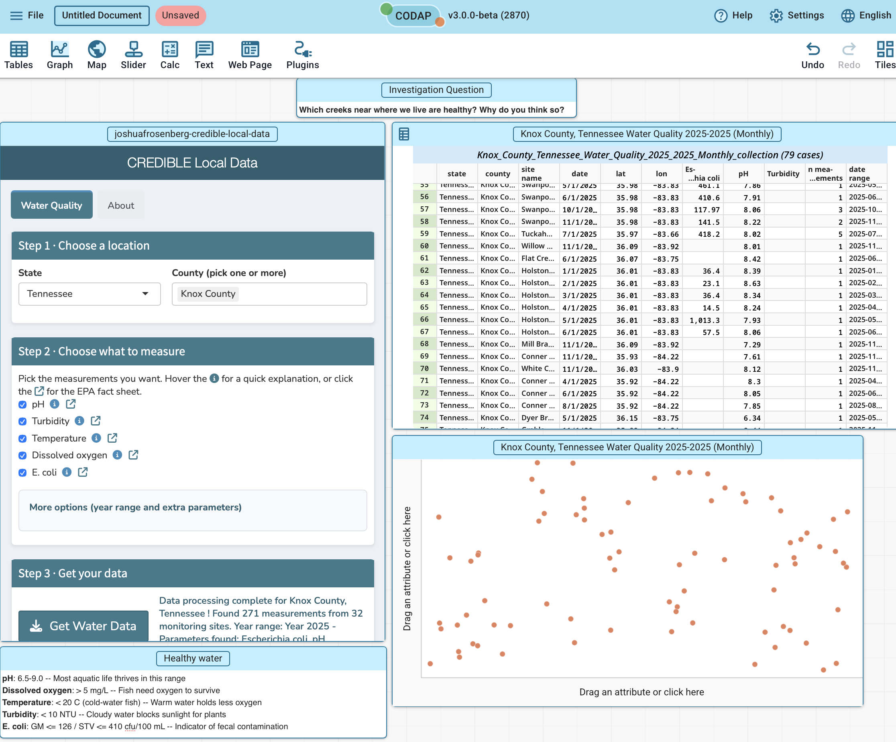
It failed
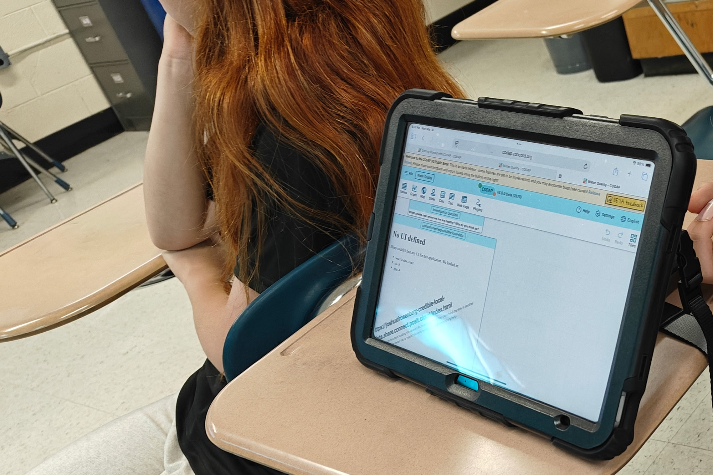
Then we fixed it
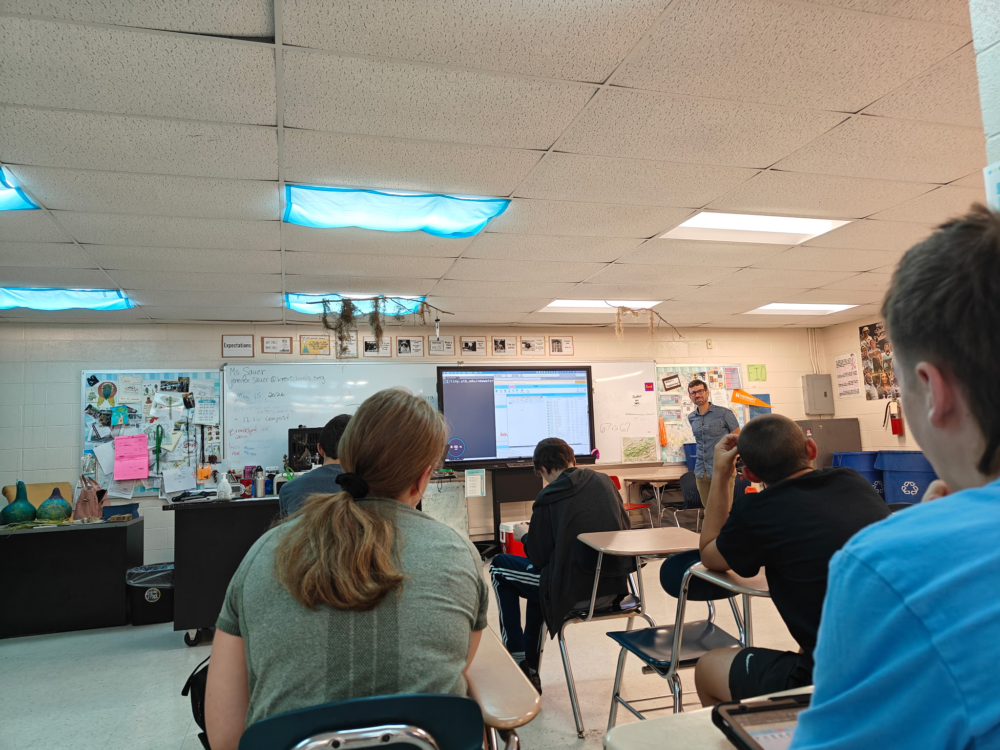
Students figured something out that was not known by others

Conclusion
Summarizing the argument
One option is that Education Data Science is simply a methodological program
Another is that Education Data Science becomes something other than data science applied in education when educational practice is the focus of the work
My argument is that the latter does work that a general data scientist would struggle to do alone and that that the latter has the potential to impact education in a more sustained way
What is part of practice-based Education Data Science?
How seriously is education practice taken? This can take many different forms — direct and indirect
A practical test: what would this look like in a school or in a district office?
A call (to myself and others)
Value work that emphasizes impact, partnership, and the data-related problems teachers, students, and others in education face.
For more junior scholars, do work that shows us what this looks like!
Acknowledgements
Project CREDIBLE teachers around Knox County Schools, especially teacher leaders and Jen Sauer
Zhen Xu, Cody Pritchard, Leah Rosenbaum, and Bradley Holtz at the University of Tennessee Knoxville
This material is based upon work supported by the National Science Foundation under Grant No. 2239152.